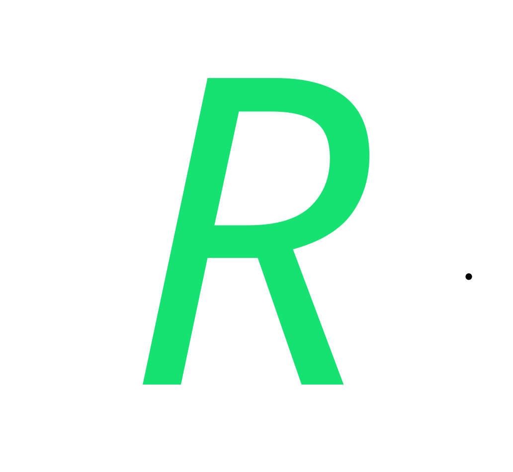

Relic
Relic
過去問・レポートをひとつに。
ログイン
新規登録
メールアドレス
パスワード
ログイン
または
Google でログイン
パスワードをお忘れですか？
Relic
無題のドキュメント
ファイル
ホーム
数式
レイアウト
表示
+
−
字
あ
亜
フォント
段落
テキスト
数式
図表
挿入
検索
置換
編集
数式ボックス
キーボード
LaTeX
数式
構造
記号
ギリシャ文字
余白
向き
サイズ
ページ設定
ページ追加
ページ削除
ページ
現在の設定
100%
100%
ページ幅
ズーム
余白ガイド
グリッド線
表示
ライト
ダーク
システム
テーマ
囲み文字（8文字以内）
丸
四角
三角
ひし形
右クリックで縁の色・太さを設定
相対値（フォントサイズに比例）
1.0
1.15
1.5
2.0
2.5
3.0
相対値を指定…
固定値（フォントサイズに依存しない）
固定値 (pt) を指定…
文字の拡大縮小（横方向）
200%
150%
120%
100%
90%
80%
70%
60%
50%
30%
テキストに線を引く
実線
破線
点線
二重線
ボックスの枠線
実線
破線
なし
標準
上 35 / 下 30 / 左 30 / 右 30 mm
狭い
上下左右 12.7 mm
やや狭い
上下 25.4 / 左右 19.05 mm
広い
上下 25.4 / 左右 50.8 mm
ユーザー設定の余白…
縦
横
A3
297 × 420 mm
A4
210 × 297 mm
A5
148 × 210 mm
B4
257 × 364 mm
B5
182 × 257 mm
0/0
置換
すべて置換
大文字と小文字を区別